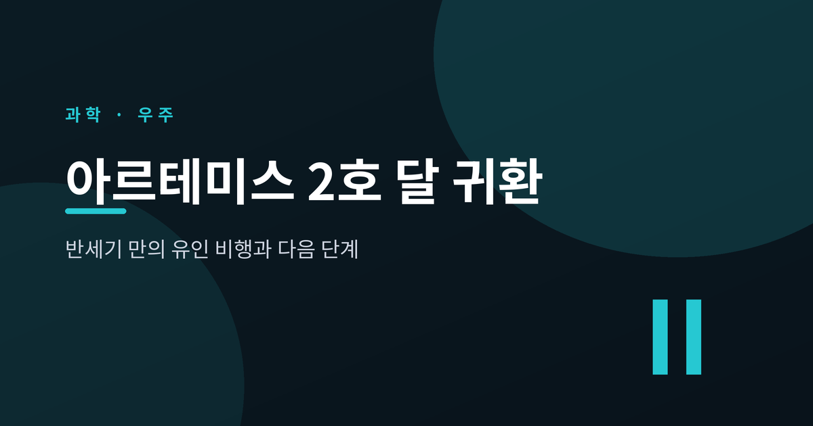
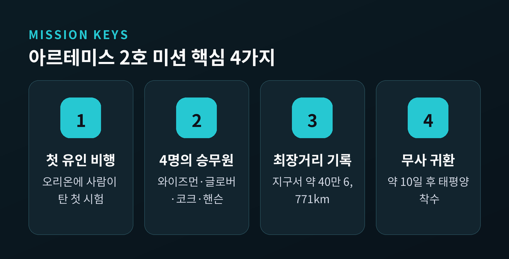
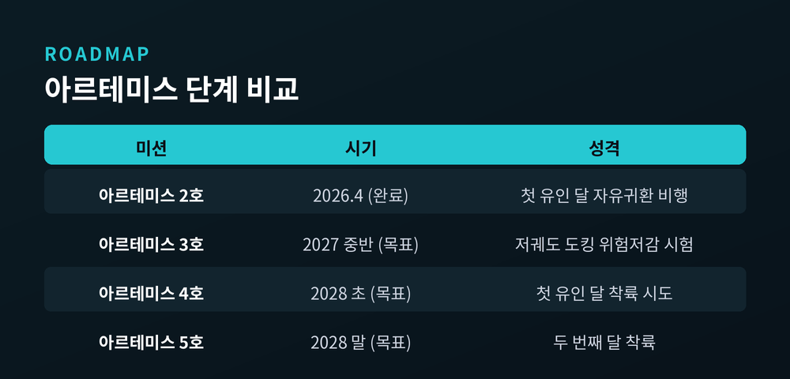
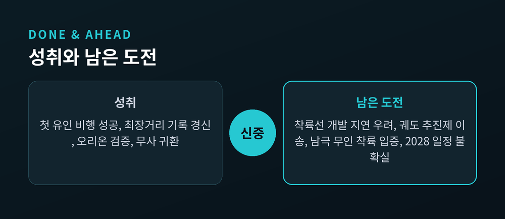

반세기 만의 유인 비행과 다음 단계 정리

2026년 4월, 인류는 50여 년 만에 다시 달 너머로 사람을 보냈습니다.
이번 글에서는 아르테미스 2호가 무엇을 해냈는지, 그리고 아르테미스 3호 이후 계획이 어떻게 바뀌었는지 정리해 보겠습니다.
결론부터 말씀드리면, 비행은 성공했고 첫 착륙 일정은 한 단계 뒤로 미뤄졌습니다.
아르테미스 2호는 2026년 4월 1일 케네디우주센터에서 SLS 로켓으로 발사됐습니다.
오리온 우주선에 사람이 탄 첫 비행이었습니다.
약 10일간 달을 자유귀환 궤도로 돌고, 4월 11일 캘리포니아 샌디에이고 남서쪽 태평양에 착수했습니다.
의미는 분명합니다.
아폴로 17호(1972년) 이후 처음으로 인간이 지구 저궤도를 벗어났습니다.
첫 유색인종, 첫 여성, 첫 비미국인이 동시에 그 경계를 넘었습니다.
비행 중에는 기록도 하나 세웠습니다.
4월 6일, 승무원은 지구로부터 약 40만 6,771km까지 나아갔습니다.
1970년 아폴로 13호가 세운 인류 최장거리 기록을 경신한 것입니다.

예전엔 새턴 V가 사람을 달로 보냈습니다.
지금은 SLS가 그 자리를 잇습니다.
SLS는 이륙 시 약 880만 파운드의 추력을 냅니다.
새턴 V보다 약 15% 강하며, 사람을 실어 나른 로켓 중 이륙 추력이 가장 큽니다.
다만 달 천이궤도 투입 능력은 약 27톤으로, 새턴 V의 절반 수준입니다.
힘은 더 세지만 멀리 보내는 짐은 더 적은 셈입니다.
사람이 머무는 오리온도 달라졌습니다.
록히드마틴의 승무원 모듈과 유럽우주국이 제공하는 서비스 모듈로 이뤄집니다.
유럽이 핵심 부품을 맡았다는 점에서, 이번 도전은 처음부터 국제 협력으로 설계됐습니다.
회수 방식도 시대를 보여줍니다.
미 해군 상륙수송함 USS 존 P. 머사가 승무원을 회수했습니다.
1975년 아폴로-소유즈 이후 처음으로 해군이 유인 미션을 거둬들인 사례입니다.

여기서 한 가지 짚고 넘어가겠습니다.
한동안 아르테미스 3호가 첫 유인 달 착륙이라고 알려졌습니다.
지금은 그렇지 않습니다.
2026년 2월 27일, NASA는 계획을 재편했습니다.
아르테미스 3호는 지구 저궤도에서 오리온이 착륙선과 도킹·랑데부하는 위험저감 비행으로 바뀌었습니다.
첫 유인 달 착륙은 그 뒤인 아르테미스 4호로 미뤄졌습니다.
새 일정안은 이렇습니다.
아르테미스 3호는 2027년 중반, 아르테미스 4호는 2028년 초, 아르테미스 5호는 2028년 말이 목표입니다.
첫 착륙지는 물 얼음이 있을 가능성이 큰 달 남극 권역으로 잡혀 있습니다.
다만 이 모든 일정은 목표일 뿐, 단정하기는 이릅니다.
한국도 이 흐름의 한 자리를 차지하고 있습니다.
2021년 열 번째로 아르테미스 약정에 서명했습니다.
아르테미스 2호에는 한국 큐브샛 1기가 실려 발사 직후 지구 저궤도에 전개됐습니다.
협력은 그 뒤로도 이어졌습니다.
한국항공우주청(KASA)은 2024년 5월 경남 사천에서 출범했습니다.
같은 해 10월에는 NASA와 '문 투 마스' 연구 협정을 맺어, 이 협정을 체결한 다섯 번째 국가가 됐습니다.
좋은 소식만 있는 것은 아닙니다.
가장 큰 변수는 착륙선입니다.
NASA 항공우주안전자문위원회는 SpaceX 스타십 착륙선이 일정보다 "수년 늦어질 수 있다"고 경고했습니다.
핵심 난제는 궤도에서 극저온 추진제를 옮기는 기술입니다.
2026년 6월로 예정된 첫 통합 급유 실증이 성패를 가르는 시험으로 꼽힙니다.
또한 NASA는 사람을 보내기 전에, 스타십이 험준한 달 남극에 무인으로 안전하게 착륙함을 입증하도록 요구하고 있습니다.
그만큼 "2028년 내 유인 달 착륙"이라는 목표가 지켜질지는 아직 장담하기 어렵습니다.

정리하면 이렇습니다.
아르테미스 2호는 사람이 다시 달 너머로 갈 수 있음을 증명했고, 첫 착륙은 한 걸음 뒤로 물러나 더 신중해졌습니다.
— "달에 다시 가는 일은, 서두름보다 확실함의 문제다."
반세기를 기다린 길입니다.
조금 더 기다린다 한들, 그 무게가 가벼워지지는 않을 것입니다.